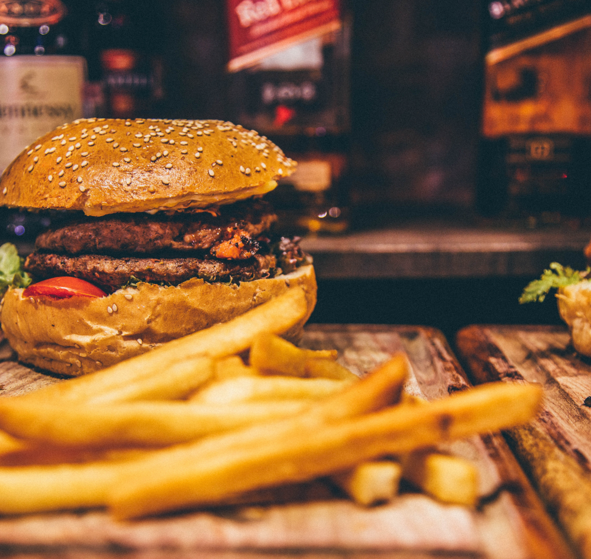

3) Put tomatoes on oiled bread and then cucumbers.
4) Decorate the dish with a sa lad.
5) Enjoy!
Tasty can be without fat
Recipe
Recipe
Rice
100 gram
Caviar
50 gram
Nori leaves
10 gram
Salmon
30 gram
Crab meat
25 gram
1) Boil the rice.
2) Grind the crab meat.
3) Chop the salmon.
4) Put salmon, caviar and crab meat on top.
5) Enjoy!
And healthy food can look gorgeous
Recipe
Recipe
Pasta
300 gram
Pestor
100 gram
Onion
30 gram
Salt
on taste
Pepper
on taste
1) Cook pasta in a large pot of boiling water until done. Drain.
2) Meanwhile, heat the oil in a frying pan over medium low heat. Add pesto, onion, and salt and pepper. Cook about five minutes, or until onions are soft.
3) In a large bowl, mix pesto mixture into pasta. Stir in grated cheese. Serve.
Our favorite food

Fletcher Davis of Athens, Texas claimed to have invented the hamburger. According to oral histories, in the 1880s he opened a lunch counter in Athens and served a 'burger' of fried ground beef patties with mustard and Bermuda onion between two slices of bread, with a pickle on the side.
CLOSE
The origin of noodles is Chinese. The earliest written record of noodles is found in a book dated to the Eastern Han period. Noodles, often made from wheat dough, had become a staple food for the people of the Han dynasty (206 BCE – 220 CE)
CLOSE
Burgers
This isn't healthy food, but
after a hard day this our fuel
Noodles
We love noodles! Ramen is our love.
We try to make for you really high-quality products. We want to make every product better and better. And we need a lot of energy to implement such grandiose plans. And the food helps us to gain strength. We all love food and will always love!